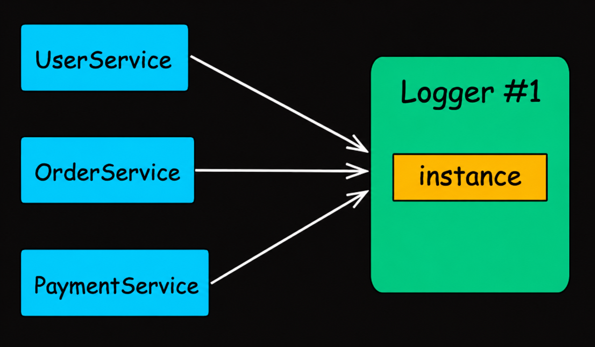
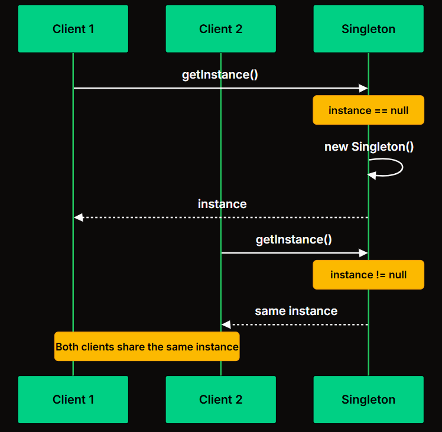
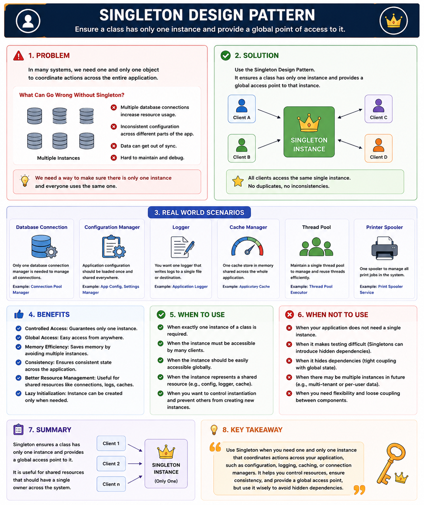

Creational Patterns
Singleton Design Pattern
New to Design Patterns?
Before diving into individual patterns like Factory, Builder, Singleton, and Prototype, it's important to understand the fundamentals of Design Patterns, their categories, and when each category should be used.
📖 Learn Design Pattern Basics →🔷 Singleton Design Pattern
The Singleton Pattern ensures that only one object of a class can exist in the entire application and provides a global access point to that object.
One Object + Accessible Everywhere = Singleton Pattern
Two requirements define the pattern:
No matter how many times any part of the code requests it, the same object is returned.
Any component can reach the instance without needing it passed through constructors or method parameters.
Simply : Global Access Point means any class anywhere in the application can access that single object.
What is a Logger?
A Logger is a component used to record information about what an application is doing while it runs.
Instead of using System.out.println() everywhere, professional applications use loggers to track:
- Application startup/shutdown
- Method execution
- User actions
- Errors and exceptions
- Database queries
- API requests/responses
- Performance metrics
Problem Without Logger
Beginner Code
Issues
- No log levels
- Difficult to search logs
- Cannot store logs in files/databases
- No timestamps
- Performance issues
- Hard to debug production issues
- Thousands of println() statements become messy.
Logger Solution
Use a logging framework like:
- Log4j
- Logback
- SLF4J (most common abstraction)
- java.util.logging
Example for PaymentService:
Another class:
Logger helps developers know which service, which class, which method, and often which line of execution caused the problem.
Why One Logger Per Class?
Suppose the logs show:
Immediately you know which class generated the log.
If the whole application used a single logger:
Finding the source becomes much harder.
So We Usually Add Logger to Every Class such as:
- Service classes
- Controllers
- Important business logic
Logger is used in almost every real-world enterprise application.
Real-Life Example
You usually need only one:
- Logger
- Configuration Manager
- Cache Manager
- Database Connection Pool Manager
Imagine if every class created its own logger:
Waste of memory and inconsistent behavior.
2. Problem (How Beginners Write Code)
Suppose you are building an e-commerce application.
You have:
- UserService
- OrderService
- PaymentService
All these services need logging.
Logger Class
UserService
OrderService
PaymentService
What Happens?
When application starts:
Three logger objects.
So problem is Memory Waste, inconsistent state
What We Actually Want
Instead of Logger1, Logger2, Logger3 objects we need one Logger object

There are several methods of solution to achieve singleton
1. Lazy Initialization (Not Thread-Safe)
How it works
- getInstance() method checks if an instance already exists.
- If not, it creates a new instance.
- If an instance already exists, it skips the creation step.
Services After Singleton
UserService
OrderService
PaymentService
Important point to note is "Not Thread-Safe"
This implementation is not thread-safe. If multiple threads call getInstance() simultaneously when instance is null, it's possible to create multiple instances.
How it actually works in requests callings:

Step 1: First Request
A client calls Singleton.getInstance(). The method checks if an instance already exists.
Step 2: Instance Creation
If no instance exists, the method creates one using the private constructor and stores it in the static field.
Step 3: Return Instance
The method returns the newly created instance.
Step 4: Subsequent Requests
Later calls to getInstance() find the instance already exists and return it immediately, skipping creation entirely.
The sequence diagram above shows two clients requesting the instance. The first triggers creation; the second returns the existing one. Both end up with references to the same object.
2. Thread-Safe Singleton
This approach extends lazy initialization by ensuring the Singleton is safe to use in multi-threaded environments.
When multiple threads try to access the instance at the same time, synchronization (or locking) ensures that only one thread can create the object, while others wait.
How it works
- The instance is created only when first requested (lazy initialization).
- The method that returns the instance uses a lock / mutex / synchronization mechanism.
- When a thread enters the protected section, it acquires the lock. Other threads must wait until the lock is released.
- This guarantees that only one instance is created, even under concurrent access.
Performance Consideration
This approach is correct but has a performance cost: every call to getInstance() acquires a lock, even after the instance has been created. Once the instance exists, there is no reason to synchronize. The next approach fixes this.
3. Double-Checked Locking
Double-checked locking reduces the performance overhead by only synchronizing during the first object creation. After the instance exists, threads skip the lock entirely.
If the first check passes, we synchronize/lock and check the same condition one more time because multiple threads may have passed the first check.
The instance is created only if both checks pass.
This method is Good Performance
Although this approach is more complex to implement, it can drastically reduce performance overhead, especially when the singleton is accessed frequently.
4. Language Specific Implementations
Enum Singleton (Recommended)
This is the simplest and safest approach in Java. Joshua Bloch recommends it in Effective Java as the best way to implement a Singleton:
The JVM provides four guarantees that no other approach offers:
- Thread-safe initialization: Enum constants are initialized exactly once when the enum class is loaded, and class loading is thread-safe.
- Serialization safety: Serializing and deserializing an enum returns the same instance.
- Reflection safety: The JVM prevents creating enum instances via reflection. Constructor.newInstance() throws an IllegalArgumentException.
- Single instance guarantee: Enforced at the JVM level, not by your code.
The only limitation is that enums cannot extend other classes (they implicitly extend java.lang.Enum), so if your Singleton needs a base class, you cannot use this approach.
6. Pros and Cons of Singleton Pattern
Pros
✓- ✓Ensures a single instance of a class and provides a global point of access to it.
- ✓Only one object is created, which can be particularly beneficial for resource-heavy classes.
- ✓Provides a way to maintain global state within an application.
- ✓Supports lazy loading, where the instance is only created when it's first needed.
- ✓Guarantees that every object in the application uses the same global resource.
Cons
!- !Violates the Single Responsibility Principle: The pattern solves two problems at the same time.
- !In multithreaded environments, special care must be taken to implement Singletons correctly to avoid race conditions.
- !Introduces global state into an application, which might be difficult to manage.
- !Classes using the singleton can become tightly coupled to the singleton class.
- !Singleton patterns can make unit testing difficult due to the global state it introduces.
When to use?
Singleton is useful in scenarios like:
- Managing Shared Resources (database connections, thread pools, caches, configuration settings)
- Coordinating System-Wide Actions (logging, print spoolers, file managers)
- Managing State (user session, application state)
Specific Examples:
- Logger Classes: Many logging frameworks use the Singleton pattern to provide a global logging object. This ensures that log messages are consistently handled and written to the same output stream.
- Database Connection Pools: Connection pools help manage and reuse database connections efficiently. A Singleton can ensure that only one pool is created and used throughout the application.
- Cache Objects: In-memory caches are often implemented as Singletons to provide a single point of access for cached data across the application.
- Thread Pools: Thread pools manage a collection of worker threads. A Singleton ensures that the same pool is used throughout the application, preventing resource overuse.
- File System: File systems often use Singleton objects to represent the file system and provide a unified interface for file operations.
When not Use Singleton When
1. Object Contains User-Specific Data
❌ Bad Code
Making User a singleton means:
Both references point to the same user.
Imagine:
Output:
Now all users share the same data.
So don't use singleton in these situation where object contains user specific data
2. Multiple Objects Are Naturally Needed
E-commerce
Each order is different.
Making Order a singleton would be wrong.
So Avoid singleton for domain objects like User, Order, Product, or Student where multiple independent instances are required.
What Happens in Modern Spring Boot Projects?
Most developers rarely write manual Singleton code.
Instead they use Spring Boot's built-in support for Singletons like below :
Spring creates exactly one instance by default.
So Singleton is still everywhere, but the framework manages it.
Modern frameworks like Spring Framework manage singleton objects automatically through dependency injection, so explicit Singleton implementations are much less common in business code.
When Testing Is Important
Singletons can make unit testing difficult.
Because global state is shared.
For Practice
Ready to practice? Try this hands-on exercise to reinforce your understanding of Singleton Design Pattern:
Start Exercise on AlgoMasterSummary
Singleton is a Creational Design Pattern that ensures only one instance of a class exists throughout the application and provides a global access point to that instance.
The main problem it solves is preventing unnecessary creation of multiple objects for resources that should be shared, such as loggers, configuration managers, cache managers, or connection pool managers.
Beginners typically create objects using new wherever needed, which can lead to multiple instances, wasted memory, inconsistent state, and management difficulties.
Singleton solves this by making the constructor private, storing a single static instance of the class, and exposing a public static method like getInstance() to access that object.
It should be used when exactly one shared object is required across the application.
However, it should not be used for normal business entities like User, Product, or Order, and excessive use can introduce global state, hidden dependencies, and testing challenges.
In modern applications, frameworks like Spring Framework often manage singleton objects automatically through dependency injection.
